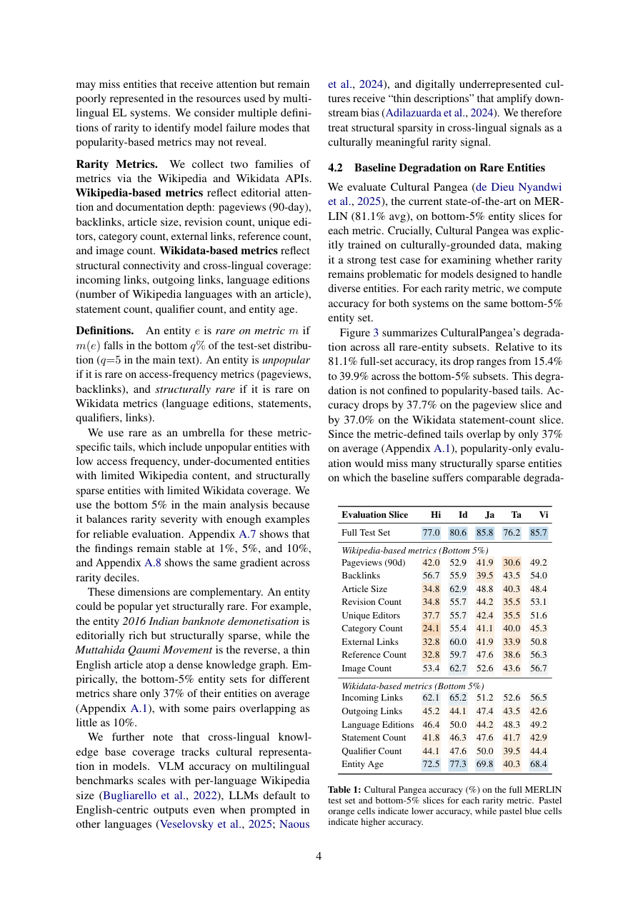

#1
★ 8/10
Think Before You Link: Rarity, Reasoning, and Retrieval in Multilingual Entity Linking
Think Before You Link: Rarity, Reasoning, and Retrieval in Multilingual Entity Linking

图 Figure · Page 4 of paper
🎯 （AI 中文深度分析暂不可用：Anthropic API 额度不足。英文栏为论文原文摘要，下方链接均可正常访问。）
Multimodal entity linking grounds entity mentions in text and images to knowledge-base entries
| 维度 | 中文 | English |
|---|---|---|
| ❓ 待解决 的问题 |
（AI 中文深度分析暂不可用：Anthropic API 额度不足。英文栏为论文原文摘要，下方链接均可正常访问。） | Multimodal entity linking grounds entity mentions in text and images to knowledge-base entries. These systems degrade on rare entities, but prior work measures rarity primarily through popularity-based metrics such as pageviews. We broaden this view using knowledge-graph structural metrics that capture how well an entity is documented and connected. These metrics identify many rare entities that popularity metrics miss. Across the resulting rare-entity slices, state-of-the-art accuracy drops by 15.4-39.9%, showing that different rarity definitions expose different failure modes. To address these failures, we introduce a simple, training-free framework in which a reasoning-capable vision-language model iteratively searches and reasons over Wikipedia, gathering evidence dynamically. Controlled experiments show that reasoning and retrieval are complementary. Reasoning alone does not significantly improve accuracy on rare entities. Retrieval without reasoning improves rare-entity accuracy but can hurt overall accuracy. Their combination performs best. On MERLIN, a multilingual multimodal entity linking benchmark over five languages (Hindi, Indonesian, Japanese, Tamil, Vietnamese), our best system improves over the state of the art by 6.9% overall and by up to 23.3% on rare-entity slices. We release MERLIN-Rare, rare-entity test slices for targeted evaluation, with our framework. |
| 💡 解决 的亮点 |
（AI 中文深度分析暂不可用：Anthropic API 额度不足。英文栏为论文原文摘要，下方链接均可正常访问。） | See the paper’s original abstract in the "Problem / 背景" row above. |
| 🧪 实验 内容 |
（AI 中文深度分析暂不可用：Anthropic API 额度不足。英文栏为论文原文摘要，下方链接均可正常访问。） | See the paper’s original abstract in the "Problem / 背景" row above. |
| 📊 实验 结果 |
（AI 中文深度分析暂不可用：Anthropic API 额度不足。英文栏为论文原文摘要，下方链接均可正常访问。） | See the paper’s original abstract in the "Problem / 背景" row above. |
| 🏁 结论 | （AI 中文深度分析暂不可用：Anthropic API 额度不足。英文栏为论文原文摘要，下方链接均可正常访问。） | See the paper’s original abstract in the "Problem / 背景" row above. |
| 🔗 论文 链接 |
arXiv: 2609.10745v1 · 📥 PDF | |
⚙️ Method · 方法详解
（AI 中文深度分析暂不可用：Anthropic API 额度不足。英文栏为论文原文摘要，下方链接均可正常访问。）
See the paper’s original abstract in the "Problem / 背景" row above.
🌟 Why It Matters · 为什么重要
（AI 中文深度分析暂不可用：Anthropic API 额度不足。英文栏为论文原文摘要，下方链接均可正常访问。）
See the paper’s original abstract in the "Problem / 背景" row above.